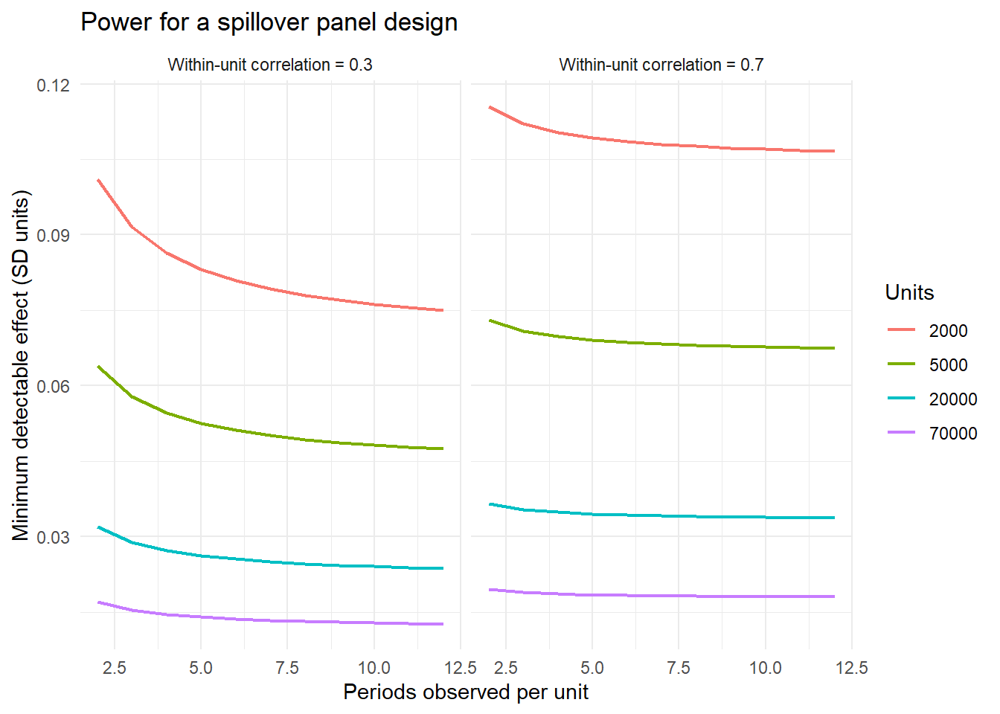

flowchart TB
M1["Move 1: a policy or platform change<br/>restricts one marketing instrument"] --> Q1{"Did behavior<br/>simply stop?"}
Q1 --> M2["Move 2: document the spillover<br/>into the untargeted market"]
M2 --> Q2{"Was the substitution<br/>good or bad for the consumer?"}
Q2 --> M3["Move 3: normative model<br/>defines optimal behavior"]
M3 --> Q3{"Do consumers actually<br/>behave that way?"}
Q3 --> M4["Move 4: mechanism evidence<br/>measures the departures"]
M4 --> Q4{"Is the welfare claim only<br/>as good as the model?"}
Q4 --> M5["Move 5: complementary analysis<br/>on downstream real outcomes"]
M5 --> C["Contribution: a signed, bounded<br/>welfare conclusion with<br/>distributional detail"]
75 Writing the Policy-and-Welfare Paper for Marketing Journals
The preceding three chapters assembled a research architecture: a causal estimate of a spillover into an untargeted market, a normative model that says what optimal behavior looks like, a calibrated welfare bound, and an independent complementary test. The architecture is field-neutral. Whether a paper built on it lands in Management Science, Marketing Science, the Journal of Marketing, the Journal of Marketing Research, the Journal of Consumer Research, or the Journal of Public Policy & Marketing depends on choices about framing, about which component carries the contribution, and about whose decision problem the paper is written for.
This chapter is about those choices. It maps the architecture onto the marketing journals, sets out the five-move template that these papers follow, translates “consumer financial protection” into the marketing-instrument vocabulary that makes the question ours rather than borrowed, supplies a portfolio of concrete project designs, and closes with the objections reviewers raise and how to pre-empt them.
75.1 Why This Paper Type Belongs in Marketing
There is a reflex to treat consumer-protection research as economics that happens to involve consumers. The reflex is wrong for a specific reason: almost every consequential consumer regulation of the past two decades restricts a marketing instrument. Section 304 of the CARD Act did not cap interest rates or limit credit lines; it banned marketing—the tables, the giveaways, the on-campus promotion of a financial product to a young audience (Brown, Grodzicki, and Medina 2026). Advertising bans restrict advertising (Dubois, Griffith, and O’Connell 2018). Privacy regimes restrict targeting and data joins (Goldfarb and Tucker 2011; Johnson, Shriver, and Goldberg 2023; Aridor, Che, and Salz 2023). Do-not-call and anti-spam rules restrict channels (Goh, Hui, and Png 2011). Disclosure mandates restrict message content. Dark-pattern rules restrict interface design.
Once a rule is understood as a constraint on the marketing mix, the questions it raises are marketing questions. What is the cross-elasticity between the restricted instrument and its substitutes? Which segments were reachable only through the restricted instrument? How does the firm reallocate budget, and what does the reallocation do to the consumers who were the rule’s intended beneficiaries? Marketing owns the substitution structure of consumer choice, the measurement of instrument effectiveness, and the models of how firms allocate across instruments. That is a comparative advantage, and it is the argument the introduction of such a paper should make in its second paragraph.
The field’s editorial statements have been explicit that work bearing on consumer and societal welfare is wanted, not tolerated (Chandy et al. 2021; Moorman et al. 2019), and the transformative-consumer-research tradition supplies a well-developed vocabulary for well-being outcomes (Mick et al. 2012; Wilkie and Moore 1999). What has been scarcer is work that combines that orientation with the identification and modeling standards of the quantitative track. The architecture in these chapters is one way to supply it.
75.2 The Journal-Fit Map
The same underlying study can be written five ways. Table 75.1 sets out what each outlet wants as the load-bearing contribution, what role the model plays, and what the review process will attack hardest.
| Outlet | Load-bearing contribution | Role of the normative model | Welfare object | Principal review risk |
|---|---|---|---|---|
| Marketing Science / QME | Identification plus model; a new estimand or a novel identification of substitution | Central; often estimated rather than only calibrated | Consumer surplus, sometimes total surplus | “Why not estimate the model?”; instrument validity |
| Management Science | A general economic mechanism demonstrated in a consequential setting | Central but may be a bounding device | Consumer welfare with explicit assumptions | Generality of the mechanism; robustness of the bound |
| Journal of Marketing Research | A clean causal fact plus measurement innovation | Supporting; disciplines the hypotheses | Behavioral outcome, welfare secondary | Design threats; external validity |
| Journal of Marketing | Managerial and societal implication; framework contribution | Framing device, kept light | Firm outcomes plus consumer well-being | “So what for managers and policymakers?” |
| Journal of Consumer Research | Psychological process; the consumer’s experience of the constraint | Usually replaced by a process theory | Consumer well-being, subjectively measured | Process evidence; alternative accounts |
| Journal of Public Policy & Marketing | Direct policy relevance and prescription | Supporting; the policy question leads | Consumer welfare and distributional equity | Depth of institutional detail; prescriptive clarity |
Two implications are worth stating plainly. First, the Marketing Science version and the Journal of Marketing version are not the same paper with different abstracts—they have different section orders, different figure sets, and different robustness sections. Deciding the outlet after the analysis is finished is a common and expensive mistake. Second, the welfare object is a positioning choice, not merely a technical one: a paper whose welfare object is firm profit is a strategy paper, and one whose object is consumer surplus is a policy paper, and reviewers evaluate them against different literatures.
75.3 The Five-Move Template
Papers with this architecture follow a recognizable sequence, shown in Figure 75.1. Each move answers the objection raised by the previous one, which is why the order is difficult to rearrange.
Move 1 — the institutional shock. Establish that a specific instrument became more costly on a specific date, with enough institutional detail that a reader can see who was exposed and who was not. This section is longer than authors expect and is where the identification is actually won.
Move 2 — the spillover. Estimate the effect on the untargeted market with a design whose control group is defined by exposure rather than geography (Chapter 71). Lead with the event study, not the pooled coefficient. Include the theory-predicted heterogeneity as a specification test.
Move 3 — the normative model. Write down the small model, derive the threshold, and state which departures are possible (Chapter 72). Two to four pages. Resist estimating it.
Move 4 — mechanism. Measure which departures are present and in what proportion, ideally with a record-linked survey (Chapter 74). This section supplies the population shares the welfare calculation needs, so it must come before the welfare section.
Move 5 — welfare and corroboration. Calibrate the bound (Chapter 73), report it by subgroup with a sensitivity analysis, and then present an independent downstream test whose failure modes differ.
Anatomy of the abstract
The anchor paper’s abstract is a compact instance of the template and repays imitation. It names the provision and what it did; concedes that the intended effect occurred (“while it reduced card use”); states the spillover with a magnitude and a distributional split; explains that a survey was designed to assess the substitution and what it revealed; states that model-based evidence implies a welfare gain; and closes with the complementary analysis of academic outcomes. Six sentences, five moves, one concession. The concession is doing strategic work: acknowledging the intended effect first buys the credibility to report the unintended one.
75.4 Generalizing the Template: Analysis and Assessment
The five moves above are a template for one paper type: a regulatory restriction with an untargeted substitute market and a price ratio to anchor a normative cutoff. Most initiatives a marketing scholar would want to evaluate are not shaped that way. A brand’s supplier-diversity commitment, a retailer’s bag charge, a platform’s safety re-ranking, a firm’s decision to fund a community program instead of cutting prices— each has social consequences and none has a posted price ratio. Kaul, Luo, and Singh (2026) supply the more general scaffold, and it is worth reading alongside the template because it shows which of the five moves is doing general work and which is an artifact of the anchor paper’s setting.
Their starting definition is the one Section 44.2 already uses, relocated from a treatment to an organizational initiative: impact is the difference between the states of the world with and without the initiative. Everything follows from taking that counterfactual seriously. The framework then splits into a descriptive step and a normative one, and the split is the source of most of its discipline, because the two steps fail in different ways and are usually conflated.
The analysis step is descriptive and has three legs. Goal realization asks how far the initiative achieved the social goal it stated—the question a program evaluation usually stops at. Spillovers ask what else it moved, financially or societally, which is the same object Chapter 71 is built around, arrived at from a different literature and given the same name. Alternative initiatives ask how the initiative performed relative to other ways of organizing to achieve the same goal.
That third leg is the one the five-move template does not have, and it is the more demanding bar. Move 2 asks whether behavior stopped or relocated; it compares the policy to no policy. Kaul and coauthors ask what else the organization could have done with the same resources, which is an opportunity-cost counterfactual. A finding that a loyalty-funded literacy program raised literacy is a Move-2 finding. A finding that it raised literacy less per dollar than a price cut to the same households would have is an analysis-step finding, and it is the one a manager can act on. Marketing is unusually well placed to supply it, because a firm’s alternative uses of the same budget are typically marketing instruments whose effects the field already knows how to estimate.
The assessment step is normative, and its contribution is to name three routes rather than one. Pareto improvement asks whether anyone was made worse off—the cleanest standard, and rarely satisfied, since almost every marketing intervention takes from someone. Net impact aggregates benefits and costs into a single metric, which is what the welfare bound of Chapter 73 does; it buys comparability by committing to an exchange rate between outcomes, and that commitment is the assumption reviewers should attack. Trade-off evaluation declines the exchange rate and characterizes the trade-offs instead, along four dimensions: relative magnitude, equity (who bears the cost), certainty (how confidently each side is known), and agency (whether those affected chose the exposure).
Figure 75.2 lays the scaffold out.
flowchart TB I["Initiative"] --> D["Analysis step<br/>(descriptive)"] D --> G["Goal realization"] D --> S["Spillovers<br/>(other financial and<br/>societal outcomes)"] D --> A["Alternative initiatives<br/>(opportunity cost of<br/>this way of organizing)"] G --> N["Assessment step<br/>(normative)"] S --> N A --> N N --> P["Pareto improvement<br/>(no one worse off)"] N --> M["Net impact<br/>(single aggregating metric)"] N --> T["Trade-off evaluation<br/>(magnitude, equity,<br/>certainty, agency)"]
The agency dimension is the one marketing should claim. Whether the people bearing a cost chose their exposure to it is precisely the question Chapter 20 is about, and it is what separates a default from a ban, a disclosed sponsorship from an undisclosed one, a price increase from a dark pattern. A welfare number that aggregates across that distinction has thrown away the variable the field knows most about.
Writing the paper in this mould
The framework is a research agenda, and the agenda is written for a management audience; the marketing version is not yet written. A tractable project takes one initiative and does the analysis step completely, which almost nobody does.
- Name the initiative and its counterfactual explicitly, in the with-and-without form. Most papers name the initiative and leave the counterfactual implicit, which is where the disagreements later turn out to live.
- Estimate goal realization with the field’s own designs. This is a standard causal-inference exercise (Chapter 44) and should be the shortest part.
- Search for spillovers where theory says substitution goes, using the taxonomy in Section 71.2. Report the untargeted-market effect with the same care as the targeted one.
- Construct at least one alternative initiative and price it. The credible ones are the firm’s own foregone options: the same budget spent on price, on the salesforce, on the product. This is the move that makes it a marketing paper rather than a program evaluation.
- Choose the assessment route in the paper, and defend the choice. Test Pareto first because it is cheap and occasionally passes. If it fails, either commit to a metric and defend the exchange rate, or report the four trade-off dimensions and decline to aggregate. Declining to aggregate is a legitimate result, provided the dimensions are measured rather than gestured at.
- Triangulate the normative claim the way Chapter 74 prescribes, since a conclusion that survives two assessment routes is worth far more than one that survives a longer robustness table under a single route.
The reviewer objection to anticipate is that the alternative-initiative comparison is unidentified, because the firm did not run the alternative. It is a fair objection and the answer is a bound: pick alternatives whose effects the literature has already pinned down with meta-analytic precision—advertising elasticities, price elasticities, salesforce response—and report the comparison as an interval. A bounded opportunity cost is more informative than a precisely estimated goal-realization effect with no comparison at all.
75.5 Translating the Question Into Marketing
The mechanical translation is a substitution of vocabulary, and it is worth doing explicitly at the proposal stage.
| Consumer-finance framing | Marketing framing |
|---|---|
| Restricting a financial product’s marketing | Restricting a marketing instrument in the mix |
| Credit card vs. student loan | Two instruments serving one consumer need, differing in price and flexibility |
| Financial mistake | Departure from the optimal use of a firm’s menu |
| Financial literacy | Category or contract knowledge; consumer expertise |
| Consumer protection | Regulation of marketing practice; platform policy |
| Welfare gain from a nudge | Consumer surplus consequence of choice architecture |
| Substitution into student loans | Cross-instrument or cross-channel substitution elasticity |
| Distributional concentration by income | Segment-level heterogeneity in vulnerability and reachability |
75.6 A Portfolio of Project Designs
What follows are settings in which the full architecture is feasible with data that exists. Each entry names the restricted instrument, the untargeted market where the substitution should appear, the identification handle, the normative benchmark, and the natural outlet. They are starting points to be sharpened, not finished designs.
| # | Setting and shock | Untargeted market | Identification handle | Normative benchmark | Welfare object / outlet |
|---|---|---|---|---|---|
| 1 | Platform bans third-party tracking for an app category | Contextual ads, retail media, email, owned channels | Category-level staggered enforcement; firms differentially reliant on tracking | Optimal reach mix given targeting precision and cost per useful impression | Consumer surplus from match quality; Marketing Science |
| 2 | Buy-now-pay-later disclosure or eligibility rule | Credit cards, overdraft, layaway | Age or state thresholds; retailer rollout timing | Price-vs-flexibility model as in Chapter 72 | Consumer welfare bound; Management Science |
| 3 | Ban on in-app loot-box marketing to minors | Direct purchases, subscriptions, secondary markets | Age gates; jurisdictional variation | Optimal spend given uncertain in-game need and price ratio | Consumer well-being; JPPM or JCR |
| 4 | Restrictions on prescription-drug advertising | Physician detailing, patient search, OTC substitutes | Channel-specific rules by drug class | Optimal information acquisition | Health outcomes plus surplus; Management Science |
| 5 | Removal of a default enrollment in a subscription service | Active enrollment, competitor services, churn | Cohort exposure to the default before and after | Optimal plan given usage uncertainty (Choi et al. 2003) | Consumer surplus and firm profit; JMR |
| 6 | Retailer eliminates a promotional instrument (e.g., coupons) | Loyalty currency, store brands, competing retailers | Chain- or region-level rollout | Optimal purchase timing under stochastic need | Consumer surplus; JMR or Marketing Science |
| 7 | Soda or snack tax with heavy in-store marketing restrictions | Untaxed categories, cross-border purchases, larger formats | Jurisdiction boundaries; scanner panels (Seiler, Tuchman, and Yao 2020) | Optimal consumption given internality (Allcott, Lockwood, and Taubinsky 2019) | Nutritional welfare; JM or Management Science |
| 8 | Ban on influencer marketing without disclosure in a category | Paid search, owned social, affiliate | Platform enforcement dates; creator-level compliance | Optimal information weighting under source uncertainty | Consumer welfare; JCR or JMR |
| 9 | Restriction on data sharing between a bank and its marketing arm | Untargeted mail, branch selling, broker channels | Institution-level compliance timing | Optimal product choice given advice quality (Hastings, Hortaçsu, and Syverson 2017) | Consumer surplus and mis-selling; Management Science |
| 10 | University or employer changes financial-aid or benefits defaults | Private loans, cards, hardship funds | Cohort exposure, as in the anchor study; staggered employer adoption (Kim et al. 2026) | Price-vs-flexibility model | Welfare bound plus academic or job outcomes; Management Science |
| 11 | Recommender re-ranked toward diversity or safety | Search, direct navigation, off-platform discovery | Algorithm rollout by market or cohort | Optimal consumption variety given search cost (Fleder and Hosanagar 2009) | Consumer surplus and variety; Marketing Science |
| 12 | Dark-pattern rule removes friction-based retention flows | Support channels, competitor switching, dormancy | Regulatory scope by firm size or jurisdiction | Optimal cancellation given switching cost | Consumer surplus; JPPM or JM |
Row 10 has a precedent outside the policy literature. Kim et al. (2026) study on-demand wage access, an employer-linked benefit that lets low-wage workers draw earned pay before the pay date, as an alternative to costly short-term credit such as payday loans. Using transaction records from about 4,000 users of one U.S. platform and a staggered-adoption difference-in-differences design, they find that adoption raises monthly saving frequency by 3.7 percent and time spent monitoring financial dashboards by 12.9 percent, with larger effects where minimum wages are lower or banking access is thinner. The design observes the same units before and after the new instrument arrives, which is the binding constraint named above. It does not observe the credit products the platform may displace, so the substitution leg of the architecture remains open.
Screening candidate projects before you invest
A project is viable only if all five of the following hold. (1) The shock has a date and a scope you can document from primary sources. (2) The substitute market is observed for the same units. (3) There is exposure variation independent of the shock date. (4) The two instruments have posted or recoverable prices, since the normative cutoff is a price ratio. (5) A downstream outcome exists that theory says should move. Failing (2) or (3) kills the project; failing (4) downgrades it from a welfare paper to a substitution paper, which is still publishable but in a different place.
75.6.1 Sizing the design before collecting data
Spillover effects are second-order by construction—a fraction of an already modest first-order effect—so power is a real constraint rather than a formality. The calculation below gives the minimum detectable effect for a two-group panel design of the kind used throughout these chapters, as a function of the number of units and the within-unit correlation of the outcome.
Code
library(ggplot2)
mde <- function(n_units, n_periods, rho = 0.6, p_treat = 0.5,
power = 0.80, alpha = 0.05) {
# Design effect for repeated measures on the same unit.
deff <- 1 + (n_periods - 1) * rho
n_eff <- n_units * n_periods / deff
(qnorm(1 - alpha / 2) + qnorm(power)) *
sqrt(1 / (n_eff * p_treat * (1 - p_treat)))
}
pw <- expand.grid(n_units = c(2000, 5000, 20000, 70000),
n_periods = 2:12, rho = c(0.3, 0.7))
pw$mde <- mapply(mde, pw$n_units, pw$n_periods, pw$rho)
ggplot(pw, aes(n_periods, mde, colour = factor(n_units))) +
geom_line(linewidth = 0.8) +
facet_wrap(~ paste("Within-unit correlation =", rho)) +
scale_colour_discrete(name = "Units") +
labs(x = "Periods observed per unit",
y = "Minimum detectable effect (SD units)",
title = "Power for a spillover panel design") +
theme_minimal(base_size = 11)
The practical reading: with the roughly 70,000 students and eight semesters of the anchor study, effects well under a tenth of a standard deviation are detectable, which is why an 8 percent movement in balances could be estimated precisely enough to support subgroup analysis. A study with two thousand units and three periods is not going to find a spillover unless it is enormous, and should be redesigned rather than run.
75.7 A Second Paper Type: The Randomized Campaign Evaluation
The architecture of the preceding chapters is one way to write a policy paper. There is a simpler type that uses almost no theory. It takes a marketing program that someone actually ran, randomizes it at scale, and measures the outcomes the program exists to change. It belongs in this chapter because its contribution is still a policy contribution. It is also the type a doctoral student can most realistically execute, because it needs a partner and a design rather than a model. Donati et al. (2026a), published in Marketing Science, is a clean recent instance. Their question is the title of the paper: can Facebook ads prevent malaria? They answer it with two field experiments, administrative health records, and a cost-per-case calculation.
Which version the numbers come from
The figures in this section come from the 2024 World Bank working paper (Donati et al. 2024). Its tables are open, and the World Bank’s reproducibility package for it holds the data and the authors’ code. Every estimate quoted here from Tables 2 to 5, 7, and D17 was reproduced from that package (Section 75.7.3). Only a one-line teaser abstract of the published article was accessible when this section was written. The 2026 CESifo version (Donati et al. 2026b) frames some results differently; those differences are noted where they matter. Check the published tables before quoting a number.
The program was a social-marketing campaign by the nonprofit Malaria No More, Bite Ko Mat Lo Lite (“don’t take the bite lightly”), funded by Facebook’s Campaigns for a Healthier World initiative. Its ads urged people to sleep under bed nets and to get tested within 24 hours of a fever. It ran on Facebook and Instagram from July 2020 to early January 2021 and spent $202,000. It reached about 130 million users in 22 states, at an average of 3.6 impressions each. It was optimized for engagement: the team switched off weaker ads and moved budget to the best-performing ones. Campaigns like this are usually judged by engagement and by platform brand-lift surveys, and by those measures this one succeeded. The paper asks two questions those measures cannot answer. Did the campaign change offline behavior and disease? And did it work for the people most at risk?
The design has five moves, shown in Figure 75.4.
- Randomize the real campaign, not a copy of it. The nonprofit agreed to delay launch in three high-burden states (Uttar Pradesh, Jharkhand, and Chhattisgarh) so that 40 of 80 districts could be randomized to receive it. One district was dropped because two districts shared a name on the randomization list, leaving 79 for analysis. The platform cannot target ads by district boundary, so the team drew circles around each district’s main cities and the advertiser excluded the control circles. Randomizing clusters rather than individuals matches how both the ads and the disease spread. It also makes every estimate an intent-to-treat effect of the campaign as it was actually delivered.
- Measure outcomes off the platform, in layers. The team recruited respondents with ads that paid mobile credit for completing chatbot surveys on Messenger. A longitudinal sample of 5,205 reported behavior in up to eight short surveys during the campaign. A separately recruited sample of 3,052 reported household malaria one to three months after it ended. Monthly records of tests and positive cases by subdistrict, split into urban and rural facilities, came from India’s Health Management Information System. Each layer covers a weakness of another. Surveys capture behavior but invite demand effects. Facility records cannot be talked into a result, but they are coarse and under-count cases.
- Fix a risk marker in advance and power both sides of it. Formative surveys found that dwelling type was the strongest household predictor of malaria. Respondents in solid brick or cement houses were 43 percent less likely to report a recent case than those in mud, tin, or straw dwellings. Organic recruitment reached mostly solid-house dwellers, so recruitment was stratified by district and dwelling type. Lookalike audiences seeded with non-solid dwellers brought about 55 percent of respondents from higher-risk housing. The marker also maps onto the facility data, because non-solid dwellings make up roughly 15 percent of urban and 50 percent of rural housing in India.
- Separate content from reach. A split by risk group cannot by itself say whether the ads failed to persuade the high-risk group or failed to reach it. A second experiment answers that question.
- Price the effect against alternatives. Convert the estimate into a cost per case averted and set it beside other ways of spending the same money.
flowchart TD
Q["Policy question in the program's own units<br/>did the campaign change behavior and disease?"] --> R["Randomize the real campaign<br/>40 of 80 districts, geofenced circles"]
R --> O["Measure off the platform<br/>surveys during and after, facility records"]
O --> H["Split by a risk marker fixed in advance<br/>solid vs non-solid dwellings, urban vs rural"]
H --> M{"Effect only where risk is low:<br/>content or reach?"}
M --> E["Second experiment equalizes exposure<br/>individual retargeting, N = 1,542"]
E --> C["Price it against alternatives<br/>cost per reported case averted"]
The headline result is a split. Among respondents in solid houses, the campaign raised the share of survey waves in which they slept under a net by 5.5 percentage points (SE 2.5; control mean 60 percent). It raised help-seeking within 24 hours of a fever by 10.7 points (SE 3.5, among the 301 who reported one). It also cut self-reported household malaria after the campaign by 2.4 points (SE 1.1) on a control rate of 5.5 percent. Among respondents in non-solid houses, each of these estimates is small and insignificant. The facility records point the same way. Malaria cases recorded at urban facilities fell by 6.21 a month per million residents (SE 2.86), while cases at rural facilities did not detectably fall (−2.24, SE 5.79), and the overall estimate (−4.68, SE 5.37) cannot be distinguished from zero. The urban estimate is significant under the paper’s conventional test but not under a wild cluster bootstrap (p = 0.09; Section 75.7.3).
Was the problem content or reach? Ad recall at the end of the campaign rose 4.9 points among treated solid-house respondents but only 1.1 points (insignificant) among non-solid ones, which suggests the ads never arrived. The second experiment tested this directly. For two weeks, the team retargeted the campaign’s best ads, through a Custom Audience, to a random half of a fresh survey pool. They reached about 90 percent of that half, at 4.9 impressions each. With exposure equalized, bed-net use the previous night rose 7.5 points (SE 2.9) on a control rate of 65 percent. The rise was 7.6 points among solid dwellers and 8.1 among non-solid dwellers, and the estimated interaction was exactly zero (SE 5.7). So the ads worked for the high-risk group once they reached it. The engagement-optimized campaign mostly did not reach it, and the recruitment data show why in prices: recruiting a respondent in a non-solid house cost almost ten times as much.
That finding is the paper’s marketing contribution. Suppose a delivery algorithm is told to maximize engagement within a budget. It will spend on the cheapest responsive users, the mechanism Lambrecht and Tucker (2019) documented for job ads. In public health, the cheapest users are often the ones who need the message least. The cost calculation then completes the template. It multiplies the monthly effect by nine months and by the 1.1 billion people in the campaign’s states. That gives $3.35 per reported case averted using the urban estimate and $6.54 using the overall estimate. The paper sets these beside $5–6 per case averted for distributing insecticide-treated nets and $5.68 per additional COVID-19 vaccination from a meta-analysis of more than 800 Facebook public-health experiments (Athey et al. 2023).
75.7.1 Reading it as a referee would
A referee should look hard at four features of the paper. Each one is also a lesson for anyone writing in this mould.
The heterogeneity carries the policy content, so it needs the strongest possible status. In the 2024 version, the dwelling-type split leads the abstract. The 2026 CESifo abstract leads instead with small and insignificant average effects. It reframes the split in terms of socioeconomic status and calls it a post-hoc heterogeneity analysis. The 2024 working paper reports ethical approval but no trial-registry identifier (the published article’s front matter could not be checked). Compare Breza et al. (2021), who randomized U.S. counties to a Facebook campaign of doctors’ and nurses’ videos before the 2020 holidays. They list their trial registrations in the abstract, name three primary outcomes, and report each one: less holiday travel, no change in the share of people leaving home, and 3.5 percent fewer recorded infections. The malaria team chose its risk marker in formative research before the trial and stratified on it, so the subgroup analysis was built into the design; a registration would have let the paper say so. With many outcomes and two strata, a referee will also ask for a multiple-testing adjustment (List, Shaikh, and Xu 2019). The replication package makes one possible (Table 75.5). Across the six survey outcomes, three effects among solid-house dwellers survive at the 5 percent level: household bed-net use, help-seeking within 24 hours, and the share of household members with malaria. Of the six interactions that test whether the effect differs by dwelling type, only household bed-net use survives. The data support “the campaign worked among solid-house dwellers” more firmly than “it worked differently by dwelling type,” and the second claim is the one the policy argument needs.
State the denominator. The working paper describes the urban reduction of 6.2 cases per million as about 30 percent of the pre-campaign monthly rate. That rate, 20.89, is the mean across all facilities. Every rate in the facility analysis divides cases by the subdistrict’s whole population, so the comparison is legitimate as far as it goes. In the subdistrict-months behind the urban estimate, all facilities recorded 20.3 cases per million before the campaign, and 6.21 is 31 percent of that. Against the 9.5 cases recorded at urban facilities, the outcome the regression actually models, the same point estimate is a 66 percent decline. The 2026 abstract gives the decline as 33 percent. The two readings answer different questions, and neither can be interpreted unless its base is stated next to it.
Show how much the sample rule matters. The administrative analysis keeps only subdistricts with at least half their population inside the study circles, to limit contamination of the controls; outside the circles, control districts did receive ads. At thresholds of 10, 20, 30, 40, and 50 percent, the urban estimate keeps its sign (−6.64, −4.82, −4.00, −5.79, −6.21). Under the paper’s cluster-robust test it is significant at the 5 percent level at 10, 40, and 50 percent but not at 20 or 30 percent. The threshold also changes how many districts identify the effect, from 74 at 10 percent to 50 at 50 percent. A wild cluster bootstrap (Section 44.1.5), which holds its size better with few or unbalanced clusters, leaves only the 10 percent sample significant (Table 75.6). The paper reports this table in an appendix. When the headline depends on a sample rule, the table belongs in the main text.
Carry the uncertainty into the cost ratio. The $6.54 figure divides by an overall effect whose 95 percent interval runs from about −16 to +10 cases per million. The ratio is finite only at the favorable end of that interval and unbounded at the other. The $3.35 figure divides by the urban estimate without controls, whose interval also includes zero (p = 0.08). Because that estimate counts urban-facility cases per resident, multiplying it by the whole population of the 22 states does not double-count. It does assume that every subdistrict has urban facilities like the 62 behind the estimate, which hold 69 percent of the sample’s population; restricting the effect to that share raises the figure to about $4.80. With a wild cluster bootstrap, every cost ratio in the paper has a best case between $1.22 and $1.58 and no finite worst case (Table 75.6). Report cost-effectiveness as an interval built from the interval of the effect, and say which population the effect applies to.
75.7.2 Power when the outcome is a rare disease
Measuring advertising effects is hard even when the outcome is sales, because the effects are small relative to the noise (Lewis and Rao 2015). It is harder when the outcome is a disease recorded at about 21 cases per million people per month and the facility estimates rest on only 56 of the 79 randomized districts, the ones with a subdistrict mostly inside the study circles (50 for the urban outcome). The chunk below asks what this design could detect, using the standard errors and means the working paper reports and the district counts from the replication package.
Code
# Design analysis of the administrative-data arm of Donati et al., using numbers
# printed in the 2024 working paper (Table 5, fully controlled columns (3), (6),
# (9), and the Table D7 means for the benchmark sample of 119 subdistricts) and
# the number of districts behind each estimate, counted in the replication
# package (see the replication subsection below).
z <- qnorm(0.975) + qnorm(0.80) # 80% power, 5% two-sided test
adm <- data.frame(
outcome = c("Overall", "Urban facilities", "Rural facilities"),
estimate = c(-4.68, -6.21, -2.24), # cases per million people per month
se = c( 5.37, 2.86, 5.79), # clustered by district
mean = c(20.89, 9.45, 18.87), # subsample means, Table D7
J = c(56, 50, 56) # districts (clusters) behind each estimate
)
adm$mde <- z * adm$se
adm$mde_pct <- 100 * adm$mde / adm$mean
adm$power_20 <- with(adm, pnorm(0.2 * mean / se - qnorm(0.975)) +
pnorm(-0.2 * mean / se - qnorm(0.975)))
# Districts needed for an MDE of 20% of the mean, scaling the SE by
# 1/sqrt(J) with subdistricts per district and panel length held fixed.
adm$districts_for_20pct <- ceiling(adm$J * (adm$mde / (0.2 * adm$mean))^2)
print(transform(adm, mde = round(mde, 1), mde_pct = round(mde_pct),
power_20 = round(power_20, 2)), row.names = FALSE)
#> outcome estimate se mean J mde mde_pct power_20
#> Overall -4.68 5.37 20.89 56 15.0 72 0.12
#> Urban facilities -6.21 2.86 9.45 50 8.0 85 0.10
#> Rural facilities -2.24 5.79 18.87 56 16.2 86 0.10
#> districts_for_20pct
#> 727
#> 899
#> 1035
# Type M (exaggeration) ratio if the true urban effect were half the
# estimate: the average |estimate| among significant results, over |truth|.
type_m <- function(true, se, crit = qnorm(0.975)) {
k <- crit * se
p_hi <- 1 - pnorm((k - true) / se)
p_lo <- pnorm((-k - true) / se)
e_hi <- true * p_hi + se * dnorm((k - true) / se)
e_lo <- true * p_lo - se * dnorm((-k - true) / se)
c(power = p_hi + p_lo,
exaggeration = ((e_hi - e_lo) / (p_hi + p_lo)) / abs(true))
}
round(type_m(true = -6.21 / 2, se = 2.86), 2)
#> power exaggeration
#> 0.19 2.31
# Cost per reported case averted, as in Section 7 of the working paper:
# monthly effect x 9 months x 1,100 million people; USD 202,000 ad spend.
cost_per_case <- function(effect) 202000 / (abs(effect) * 9 * 1100)
sprintf("%.3f", c(overall = cost_per_case(-3.12), urban = cost_per_case(-6.10)))
#> [1] "6.540" "3.345"
# The overall estimate's 95% interval (column 1: -3.12, SE 6.37) includes
# zero, so the ratio is finite only at the favourable end of the interval.
ci <- -3.12 + c(-1, 1) * qnorm(0.975) * 6.37
round(ci, 1)
#> [1] -15.6 9.4
sprintf("%.2f", cost_per_case(ci[1]))
#> [1] "1.31"For overall incidence, the design’s minimum detectable effect was about 15 cases per million, or 72 percent of the mean. Its chance of detecting a 20 percent reduction was about one in eight. Bringing the minimum detectable effect down to 20 percent would take roughly 730 districts, against the 126 in the three study states. That scaling holds the number of subdistricts per district and the length of the panel fixed, so treat it as a rough guide rather than a design.
The urban estimate, significant only under the conventional test, has a second problem. Suppose the true effect were half the estimate. The design would detect it about one time in five, and the estimates that did reach significance would overstate it by a factor of about 2.3 on average. Gelman and Carlin (2014) call this kind of exaggeration a Type M error. None of this makes the urban result wrong. It means the administrative arm can corroborate the survey evidence but cannot carry the claim on its own. The parts of the paper that were adequately powered are the individual-level survey outcomes, with thousands of respondents, and the mechanism experiment, whose outcome (bed-net use) is common.
When you design a study in this mould, run this calculation for the administrative outcome before launch. Then decide in advance which layer is the primary test, and write the abstract to match that decision.
Read against Section 75.4, the paper completes two legs of the analysis step that most program evaluations skip. Its comparison of cost per case with net distribution and vaccine campaigns prices an alternative initiative. Its central finding is an equity result in the trade-off sense: the benefits went to the group with less at stake. Read against Table 75.1, it shows what makes a theory-light evaluation a Marketing Science paper rather than a public-health one. The outcome is malaria, but the contribution is about delivery, targeting, and measurement beyond a platform’s own metrics. That contribution applies to any advertiser whose objective differs from the one the platform optimizes.
75.7.3 Replicating the campaign evaluation
The World Bank’s reproducibility package for the working paper holds the de-identified survey responses, the raw facility records (one spreadsheet per district and month, 1,778 in all), and the authors’ Stata code. The cleaning and estimation code was ported to R without running any of the package’s own code. The port reproduces every coefficient, standard error, and sample size in Tables 2 to 5, 7, and D17 to the printed precision, 60 of 60 estimates. Table 75.4 shows the ones this section quotes.
Two details of the port are worth knowing before you attempt one like it. The first is that the facility-data cleaning deletes every period from every spreadsheet cell before it converts text to numbers. Stata writes a whole-number cell as 1262, so nothing breaks. A reader that writes 1262.0 multiplies every count by ten, and every Table 5 estimate with it, so the code is correct only because of how one program prints numbers. The second is that Stata treats a missing value as larger than any number, so the rule that drops household malaria shares above one also drops missing shares. In the cross-section, that rule is what removes the junk answers. The survey files also carry Messenger user IDs and free-text answers. For that reason the replication script reads only the analysis columns and replaces the user ID with an integer index as soon as it loads. That is the minimum to expect of any script that handles chatbot-survey data.
The replication also yields a count the paper does not report. The facility analysis keeps subdistricts with more than half their population inside the study circles. Those 119 subdistricts lie in only 56 of the 79 randomized districts, and the urban estimate rests on 62 subdistricts in 50 districts. The power calculation in Section 75.7.2 uses these counts.
Code
pwm_repl <- data.frame(
Estimate = c("Bed-net use, share of waves; solid (T2, col. 4)",
"Household members under a net; solid (T2, col. 8)",
"Household members under a net; T x solid (T2, col. 7)",
"Help within 24 hours of a fever; solid (T3, col. 8)",
"Any household malaria; solid (T4, col. 4)",
"Any household malaria; T x solid (T4, col. 3)",
"Facility cases, overall, no controls (T5, col. 1)",
"Facility cases, overall, all controls (T5, col. 3)",
"Urban facilities, no controls (T5, col. 4)",
"Urban facilities, all controls (T5, col. 6)",
"Rural facilities, all controls (T5, col. 9)",
"Retargeted bed-net use (T7, col. 1)",
"Retargeted bed-net use; individual T x solid (T7, col. 3)"),
`Working paper` = c("0.055 (0.025)", "0.068 (0.019)", "0.081 (0.025)", "0.107 (0.035)",
"-0.024 (0.011)", "-0.038 (0.018)", "-3.12 (6.37)", "-4.68 (5.37)",
"-6.10 (3.41)", "-6.21 (2.86)", "-2.24 (5.79)", "0.075 (0.029)",
"0.000 (0.057)"),
Replication = c("0.055 (0.025)", "0.068 (0.019)", "0.081 (0.025)", "0.107 (0.035)",
"-0.024 (0.011)", "-0.038 (0.018)", "-3.12 (6.37)", "-4.68 (5.37)",
"-6.10 (3.41)", "-6.21 (2.86)", "-2.24 (5.79)", "0.075 (0.029)",
"0.000 (0.057)"),
N = c(1789, 1789, 3900, 301, 1316, 3052, 1498, 1498, 791, 791, 1338, 1043, 1043),
Districts = c(79, 79, 79, 78, 79, 79, 56, 56, 50, 50, 56, NA, NA),
check.names = FALSE)
op <- options(knitr.kable.NA = "")
tab <- knitr::kable(pwm_repl, align = "lcccc", format.args = list(big.mark = ","))
options(op); tab| Estimate | Working paper | Replication | N | Districts |
|---|---|---|---|---|
| Bed-net use, share of waves; solid (T2, col. 4) | 0.055 (0.025) | 0.055 (0.025) | 1,789 | 79 |
| Household members under a net; solid (T2, col. 8) | 0.068 (0.019) | 0.068 (0.019) | 1,789 | 79 |
| Household members under a net; T x solid (T2, col. 7) | 0.081 (0.025) | 0.081 (0.025) | 3,900 | 79 |
| Help within 24 hours of a fever; solid (T3, col. 8) | 0.107 (0.035) | 0.107 (0.035) | 301 | 78 |
| Any household malaria; solid (T4, col. 4) | -0.024 (0.011) | -0.024 (0.011) | 1,316 | 79 |
| Any household malaria; T x solid (T4, col. 3) | -0.038 (0.018) | -0.038 (0.018) | 3,052 | 79 |
| Facility cases, overall, no controls (T5, col. 1) | -3.12 (6.37) | -3.12 (6.37) | 1,498 | 56 |
| Facility cases, overall, all controls (T5, col. 3) | -4.68 (5.37) | -4.68 (5.37) | 1,498 | 56 |
| Urban facilities, no controls (T5, col. 4) | -6.10 (3.41) | -6.10 (3.41) | 791 | 50 |
| Urban facilities, all controls (T5, col. 6) | -6.21 (2.86) | -6.21 (2.86) | 791 | 50 |
| Rural facilities, all controls (T5, col. 9) | -2.24 (5.79) | -2.24 (5.79) | 1,338 | 56 |
| Retargeted bed-net use (T7, col. 1) | 0.075 (0.029) | 0.075 (0.029) | 1,043 | |
| Retargeted bed-net use; individual T x solid (T7, col. 3) | 0.000 (0.057) | 0.000 (0.057) | 1,043 |
Table 75.5 answers the referee’s multiple-testing question for the six survey outcomes in Tables 2 to 4. It treats two families separately: the effects among solid-house dwellers, and the interactions that test whether the effect differs by dwelling type. The adjustment is the Romano–Wolf step-down, the procedure that List, Shaikh, and Xu (2019) build on for experiments with several outcomes and subgroups. Each step compares a t-statistic with the bootstrap distribution of the largest t-statistic among the hypotheses not yet rejected. The bootstrap draws one wild-cluster weight per district and applies it in all twelve regressions, so it keeps the correlation between outcomes reported by overlapping respondents.
Three of the six solid-house effects survive at the 5 percent level: household bed-net use (adjusted p = 0.013), help-seeking within 24 hours (0.024), and the share of household members with malaria (0.038). The respondent’s own bed-net use and the any-malaria indicator do not (0.14 each). Among the interactions, only household bed-net use survives (0.009). Holm’s simpler adjustment of the conventional p-values reaches the same verdicts. The evidence that the campaign changed behavior and health among solid-house dwellers is fairly strong. The evidence that its effect differed by dwelling type rests mainly on one outcome.
Code
pwm_mt <- data.frame(
Outcome = c("Bed-net use, share of waves", "Household members under a net",
"Any fever in household", "Help within 24 hours of a fever",
"Any household malaria", "Share of members with malaria"),
`Solid: effect` = c(0.055, 0.068, 0.008, 0.107, -0.024, -0.008),
`Solid: p` = c(0.029, 0.001, 0.702, 0.003, 0.035, 0.005),
`Solid: adjusted p` = c(0.142, 0.013, 0.722, 0.024, 0.142, 0.038),
`T x solid: effect` = c(0.051, 0.081, -0.016, 0.107, -0.038, -0.011),
`T x solid: p` = c(0.179, 0.002, 0.564, 0.069, 0.035, 0.045),
`T x solid: adjusted p` = c(0.334, 0.009, 0.562, 0.192, 0.163, 0.181),
check.names = FALSE)
knitr::kable(pwm_mt, digits = 3, align = "lcccccc")| Outcome | Solid: effect | Solid: p | Solid: adjusted p | T x solid: effect | T x solid: p | T x solid: adjusted p |
|---|---|---|---|---|---|---|
| Bed-net use, share of waves | 0.055 | 0.029 | 0.142 | 0.051 | 0.179 | 0.334 |
| Household members under a net | 0.068 | 0.001 | 0.013 | 0.081 | 0.002 | 0.009 |
| Any fever in household | 0.008 | 0.702 | 0.722 | -0.016 | 0.564 | 0.562 |
| Help within 24 hours of a fever | 0.107 | 0.003 | 0.024 | 0.107 | 0.069 | 0.192 |
| Any household malaria | -0.024 | 0.035 | 0.142 | -0.038 | 0.035 | 0.163 |
| Share of members with malaria | -0.008 | 0.005 | 0.038 | -0.011 | 0.045 | 0.181 |
Table 75.6 turns to the facility records. With 50 to 74 clusters of unequal size, conventional cluster-robust tests can reject too often. The table therefore adds a wild cluster bootstrap with the null imposed and one Rademacher weight per district (9,999 draws), and its 95 percent intervals invert that test. The fully controlled urban estimate has a conventional p-value of 0.035 and a bootstrap p-value of 0.092, and its bootstrap interval runs from −12.9 to +1.0 cases per million. Measured against the urban-facility mean in its own sample (9.5 cases), the point estimate is a 66 percent decline. The interval runs from a decline larger than the whole urban caseload to an 11 percent rise. Across the population thresholds of Table D17, only the most inclusive sample, at 10 percent, stays significant under the bootstrap.
The cost ratios inherit this uncertainty. Every bootstrap interval reaches zero, so every ratio has a finite best case, between $1.22 and $1.58 per reported case averted, and no finite worst case. The paper’s $3.35 and $6.54 are point estimates of ratios whose upper bound the data cannot set. The table’s $6.53 uses the unrounded coefficient; the paper rounds it to −3.12 first.
Code
pwm_hmis <- data.frame(
Estimate = c("Overall, no controls (T5, col. 1)", "Overall, all controls (T5, col. 3)",
"Urban, no controls (T5, col. 4)", "Urban, all controls (T5, col. 6)",
"Rural, all controls (T5, col. 9)", "Urban, threshold 10% (D17)",
"Urban, threshold 20% (D17)", "Urban, threshold 30% (D17)",
"Urban, threshold 40% (D17)"),
Effect = c(-3.12, -4.68, -6.10, -6.21, -2.24, -6.64, -4.82, -4.00, -5.79),
Districts = c(56, 56, 50, 50, 56, 74, 72, 67, 56),
`p, cluster-robust` = c(0.626, 0.387, 0.080, 0.035, 0.700, 0.014, 0.062, 0.129, 0.047),
`p, wild bootstrap` = c(0.660, 0.485, 0.098, 0.092, 0.746, 0.028, 0.143, 0.240, 0.121),
`95% wild-bootstrap interval` = c("-16.6 to 10.6", "-16.8 to 8.3", "-13.3 to 1.2",
"-12.9 to 1.0", "-15.5 to 11.8", "-12.2 to -0.7",
"-10.8 to 1.5", "-10.1 to 2.3", "-12.5 to 1.5"),
`Cost per case (USD)` = c(6.53, 4.36, 3.35, 3.28, NA, NA, NA, NA, NA),
`Best case (USD)` = c(1.23, 1.22, 1.53, 1.58, NA, NA, NA, NA, NA),
check.names = FALSE)
op <- options(knitr.kable.NA = "")
tab <- knitr::kable(pwm_hmis, digits = 3, align = "lccccccc")
options(op); tab| Estimate | Effect | Districts | p, cluster-robust | p, wild bootstrap | 95% wild-bootstrap interval | Cost per case (USD) | Best case (USD) |
|---|---|---|---|---|---|---|---|
| Overall, no controls (T5, col. 1) | -3.12 | 56 | 0.626 | 0.660 | -16.6 to 10.6 | 6.53 | 1.23 |
| Overall, all controls (T5, col. 3) | -4.68 | 56 | 0.387 | 0.485 | -16.8 to 8.3 | 4.36 | 1.22 |
| Urban, no controls (T5, col. 4) | -6.10 | 50 | 0.080 | 0.098 | -13.3 to 1.2 | 3.35 | 1.53 |
| Urban, all controls (T5, col. 6) | -6.21 | 50 | 0.035 | 0.092 | -12.9 to 1.0 | 3.28 | 1.58 |
| Rural, all controls (T5, col. 9) | -2.24 | 56 | 0.700 | 0.746 | -15.5 to 11.8 | ||
| Urban, threshold 10% (D17) | -6.64 | 74 | 0.014 | 0.028 | -12.2 to -0.7 | ||
| Urban, threshold 20% (D17) | -4.82 | 72 | 0.062 | 0.143 | -10.8 to 1.5 | ||
| Urban, threshold 30% (D17) | -4.00 | 67 | 0.129 | 0.240 | -10.1 to 2.3 | ||
| Urban, threshold 40% (D17) | -5.79 | 56 | 0.047 | 0.121 | -12.5 to 1.5 |
None of this overturns the paper. Its survey estimates reproduce exactly, and its main solid-house effects survive adjustment. What the replication changes is the status of two claims. The dwelling-type difference rests mainly on household bed-net use, and the decline in facility-recorded malaria is suggestive rather than established. That is the division of labor the power analysis predicted: the administrative arm can corroborate the survey evidence but cannot carry the claim on its own.
The full replication script below reads the package from a local copy whose path is its first argument. It reproduces all 60 estimates and prints the numbers in the three tables above, in about three minutes. To run it, download RR_IND_2024_180.zip from the World Bank’s Reproducible Research Repository (catalog entry 178), unzip it, and run Rscript replicate_donati2024.R path/to/RR_IND_2024_180. The book does not run it at render time.
Code
# Replication of Donati, Rao, Orozco-Olvera & Munoz-Boudet, "Can Facebook Ads
# Prevent Malaria?" (World Bank PRWP 10967, 2024), from the World Bank
# reproducibility package RR_IND_2024_180 (Stata code, BSD-3). This script ports
# the package's cleaning do-files (01, 03, 05, 06) and the Table 2-5, 7 and D17
# do-files to R, then adds a Romano-Wolf adjustment, wild-cluster-bootstrap
# intervals, and cost-per-case intervals. It reads the package by path, runs
# nothing from it, and writes nothing to disk.
#
# Privacy: the survey files hold Messenger user IDs and free-text answers in which
# some respondents typed phone numbers. The script reads only the analysis columns,
# replaces the user ID with a row-group integer at once, and never reads free text.
#
# Usage: Rscript replicate_donati2024.R <path/to/RR_IND_2024_180> [B = 9999]
# Packages: data.table, fixest, readxl, haven. Runtime: about 3 minutes.
suppressPackageStartupMessages({
library(data.table); library(fixest); library(readxl); library(haven)
})
setFixest_notes(FALSE)
args <- commandArgs(trailingOnly = TRUE)
raw <- file.path(args[1], "Reproducibility package", "01_RawData")
B <- if (length(args) > 1) as.integer(args[2]) else 9999L
# ---- Stata semantics ---------------------------------------------------------
num <- function(x) suppressWarnings(as.numeric(gsub("[NA]", "", x))) # destring, i("NA")
gtS <- function(a, b) { a[is.na(a)] <- Inf; b[is.na(b)] <- Inf; a > b } # missing = +Inf
divS <- function(a, b) ifelse(!is.na(b) & b == 0, NA_real_, a / b) # x/0 is missing
sday <- function(s) as.numeric(as.Date(substr(s, 1, 10), "%Y-%m-%d") - as.Date("1960-01-01"))
rd <- function(f, cols) { # read only the analysis columns, all as text
d <- fread(file.path(raw, f), select = cols, colClasses = "character",
na.strings = "__none__", encoding = "UTF-8")
for (j in names(d)) set(d, which(is.na(d[[j]])), j, "")
d
}
dummy <- function(x, lev) fifelse(x == "NA", NA_real_, as.numeric(x == lev))
covars <- function(d) {
for (v in intersect(c("age", "familymembers", "pucca", "university", "unemployed",
"student", "female", "hasmosquitonet", "hasairconditioning",
"pregnantwoman", "treatment"), names(d))) set(d, j = v, value = num(d[[v]]))
d[, `:=`(distance_15 = dummy(distancemedicalcenter, "Less than 15 minutes"),
distance_15_30 = dummy(distancemedicalcenter, "Between 15 and 30 minutes"),
distance_30_60 = dummy(distancemedicalcenter, "Between 30 and 60 minutes"),
hindu = dummy(religion, "Hindu"), muslim = dummy(religion, "Muslim"),
caste_obc = dummy(caste, "OBC"), caste_other = dummy(caste, "Other"),
caste_scdalit = dummy(caste, "SC/Dalit"), caste_st = dummy(caste, "ST"),
secondary = dummy(education, "Secondary"), primary = dummy(education, "Primary"))]
}
demog <- c("age", "familymembers", "pucca", "university", "unemployed", "student", "female",
"caste", "education", "distancemedicalcenter", "religion", "hasairconditioning",
"pregnantwoman", "hasmosquitonet")
ci_dta <- as.data.table(read_dta(file.path(raw, "cluster_info.dta"))) # written by 01_Clean_panel.do
# ---- Experiment 1 panel (01_Clean_panel.do) -----------------------------------
P <- rd("full_panel.csv", c("userid", "wave", "startTime", "stratumid", "treatment",
"answer_time_90", "answer_time_min", "survey_start_time", "survey_end_time",
demog, "malaria5year", "sleepundernet", "perc_membersbednet", "fever2weeks",
"timeseekhelpfever"))
P[, uid := .GRP, by = userid][, userid := NULL] # drop the platform ID at once
P[, `:=`(wave = num(wave), st = num(startTime))]
setorder(P, uid, wave, st, na.last = TRUE)
P <- P[!duplicated(P, by = c("uid", "wave"))] # first response per wave
P <- merge(P, ci_dta[, !"cluster_population"], by = "stratumid", all.x = TRUE)
covars(P)
for (v in c("malaria5year", "sleepundernet", "perc_membersbednet", "fever2weeks"))
set(P, j = v, value = num(P[[v]]))
P[, help24_fever := fifelse(timeseekhelpfever %in% c("", "NA"), NA_real_,
as.numeric(timeseekhelpfever == "Less than 24 hours"))]
r <- divS(num(P$answer_time_90), num(P$answer_time_min)); P <- P[!is.na(r) & r >= 3]
# time-invariant answers come from wave 0 (recode if wave>0, then carryforward)
ti <- c("caste_obc", "caste_other", "caste_scdalit", "caste_st", "distance_15", "distance_15_30",
"distance_30_60", "hindu", "muslim", "age", "familymembers", "pucca", "university",
"unemployed", "student", "female", "hasmosquitonet", "hasairconditioning", "pregnantwoman")
P[, base_malaria5year := malaria5year]
w0 <- P[wave == 0, c("uid", ti, "base_malaria5year"), with = FALSE]
P <- merge(P[, !c(ti, "base_malaria5year"), with = FALSE], w0, by = "uid", all.x = TRUE)
P <- P[!is.na(age) & age < 90 & age > 17 & !is.na(familymembers) & familymembers < 30 & !is.na(pucca)]
P[, `:=`(start = sday(survey_start_time), end = sday(survey_end_time))]
P <- P[!is.na(end) & end <= 22311] # completed by 2021-01-31
P[, post := as.numeric(is.na(start) | start > 22158)] # started after 2020-08-31
P[post == 0 & end >= 22146, post := NA]
P <- P[!is.na(post) & !(wave == 1 & post == 0)]
setorder(P, uid, wave)
mn <- function(x) if (all(is.na(x))) NA_real_ else mean(x, na.rm = TRUE)
mx <- function(x) if (all(is.na(x))) NA_real_ else max(x, na.rm = TRUE)
Pc <- P[, c(list(w_net = sum(!is.na(sleepundernet) & !is.na(perc_membersbednet)),
w_fev = sum(!is.na(fever2weeks)), w_h24 = sum(!is.na(help24_fever)),
avg_sleepundernet = mn(sleepundernet), avg_perc_membersbednet = mn(perc_membersbednet),
fever2weeks = mx(fever2weeks), help24_fever = mx(help24_fever)),
lapply(.SD, `[`, 1)), by = .(uid, post),
.SDcols = c("state", "treatment", "stratumid", ti, "secondary", "primary",
"base_malaria5year", grep("^cluster_", names(P), value = TRUE))]
Pc <- Pc[!is.na(university) & state != ""][, treatment_pucca := treatment * pucca]
# ---- Experiment 1 cross-section (03_Clean_xsection.do) -------------------------
X <- rd("xsection.csv", c("stratumid", "treatment", "answer_time_90", "answer_time_min",
"survey_end_time", demog, "malaria4months", "numbermalaria4months"))
X <- merge(X[stratumid != ""], ci_dta[, !"cluster_population"], by = "stratumid", all.x = TRUE)
covars(X)
r <- divS(num(X$answer_time_90), num(X$answer_time_min)); X <- X[!is.na(r) & r >= 3]
X <- X[!is.na(age) & age < 90 & age > 17 & !is.na(familymembers) & familymembers < 30 & !is.na(pucca)]
X <- X[!is.na(e <- sday(survey_end_time)) & e <= 22370] # completed by 2021-03-31
X[, `:=`(malaria4months = num(malaria4months), nm4 = num(numbermalaria4months))]
X[malaria4months == 0 & is.na(nm4), nm4 := 0]
X[, share_malaria := divS(nm4, familymembers)]
X[gtS(share_malaria, 1), `:=`(share_malaria = NA, malaria4months = NA)] # trims >1, incl. junk
X <- X[!is.na(university) & !is.na(share_malaria) & !is.na(hasmosquitonet) &
!is.na(hasairconditioning) & state != ""][, treatment_pucca := treatment * pucca]
# ---- Experiment 2, individual retargeting (05_Clean_individual.do) -------------
I <- rd("individual_effect.csv", c("wave", "treatment", "ind_treatment", "answer_time_90",
"answer_time_min", demog, "sleepundernet", "membersbednet"))
I <- I[!is.na(num(wave))]
covars(I)
r <- divS(num(I$answer_time_90), num(I$answer_time_min)); I <- I[!is.na(r) & r >= 2]
I <- I[!is.na(age) & age < 90 & age > 17 & !is.na(familymembers) & familymembers < 30 & !is.na(pucca)]
I[, `:=`(sleepundernet = num(sleepundernet), ind_treatment = num(ind_treatment),
pm = divS(num(membersbednet), familymembers))]
I[gtS(pm, 1), pm := NA]
I <- I[!is.na(sleepundernet) & !is.na(pm)]
I <- I[!is.na(hasmosquitonet) & !is.na(university) & !is.na(hasairconditioning)]
I[, ind_treatment_pucca := ind_treatment * pucca]
# ---- HMIS facility records (06_Clean_subdistricts.do) ---------------------------
sec <- c("type", "M10 [Number of cases of Childhood Diseases (0-5 years)]", "M11 [NVBDCP]",
"M16 [Details of deaths reported with probable causes:]")
lab <- c("Total [(A+B) or (C+D)]" = "total", "Public [A]" = "public", "Private [B]" = "private",
"Urban [C]" = "urban", "Rural [D]" = "rural")
pos_t <- c("MalariaMicroscopyTests-PlasmodiumFalciparumtestpositive",
"MalariaMicroscopyTests-PlasmodiumVivaxtestpositive",
"MalariaRDT-PlamodiumFalciparumtestpositive", "MalariaRDT-PlasmodiumVivaxtestpositive")
test_t <- c("TotalBloodSmearsExaminedforMalaria", "RDTconductedforMalaria")
strip <- function(s) {
s <- gsub("[() */.]", "", s)
for (p in list(c("ShaligramRamNarayanpur", ""), c("JhariaCumJorapokharCumSindri", "Jhariacumjorapokhar"),
c("DhanbadCumKenduadihCumJagata", "Dhanbadsadar"), c("NilambarPitambarpur", "Lesliganj")))
s <- gsub(p[1], p[2], s, fixed = TRUE)
s
}
proper <- function(s) gsub("(^|[^a-z])([a-z])", "\\1\\U\\2", tolower(s), perl = TRUE)
parse_hmis <- function(f, state) {
x <- as.matrix(read_excel(f, col_names = FALSE, col_types = "text", .name_repair = "minimal"))
x[is.na(x)] <- ""
date <- gsub("-", "", substring(x[2, 1], nchar(x[2, 1]) - 7))
A <- x[, 1]; A[7:8] <- "type"
for (i in 2:length(A)) if (A[i] == "") A[i] <- A[i - 1]
v <- x[A %in% sec, -c(1, 2, 4), drop = FALSE]
# readxl renders numeric cells as "1262.0"; Stata renders "1262". The do-file
# later strips every "." from every cell, so the rendering must match Stata's.
isn <- grepl("^-?[0-9]+([.][0-9]+)?([eE][-+]?[0-9]+)?$", v)
v[isn] <- sprintf("%.15g", as.numeric(v[isn]))
v[v[, 1] == "", 1] <- "type"
district <- gsub("[ -]", "", v[1, 2])
m <- v[2, ] %in% names(lab); v[2, m] <- lab[v[2, m]]
K <- ncol(v)
for (i in 3:K) if (v[1, i] == "") v[1, i] <- v[1, i - 1]
for (i in 2:K) v[1, i] <- gsub("[ -]", "", paste0(v[2, i], v[1, i]))
v <- v[, -(2:6), drop = FALSE]; v[] <- strip(v)
nm <- paste0("v", c(1, 7:K)) # Stata's `cap rename`: legal, unused names only
for (j in seq_along(nm)) {
new <- v[1, j]
if (nchar(new) <= 32 && grepl("^[A-Za-z_][A-Za-z0-9_]*$", new) && !(new %in% nm)) nm[j] <- new
}
v <- v[-(1:2), , drop = FALSE]
rows <- v[, nm == "type"] %in% c(pos_t, test_t)
st <- regmatches(nm, regexec("^(total|urban|rural)(.+)$", nm))
ok <- lengths(st) == 3
if (!any(rows) || !any(ok)) return(NULL)
long <- rbindlist(lapply(which(ok), function(j)
data.table(type = v[rows, nm == "type"], stub = st[[j]][2], sd = st[[j]][3],
value = suppressWarnings(as.numeric(v[rows, j])))))
long <- dcast(long, type + sd ~ stub, value.var = "value")
long <- long[!sd %in% c("DistrictHQ", "DISTRICTHQ", "Urban", "Civildispensaries", "Districthospital")]
long[, `:=`(state = state, district = district, subdistrict = proper(sd), date = date, sd = NULL)]
}
dirs <- c("Chhattisgarh2020_2021", "Chhattisgarh2021_2022", "Jharkhand2020_2021",
"Jharkhand2021_2022", "UttarPradesh2020_2021", "UttarPradesh2021_2022")
H <- rbindlist(lapply(dirs, function(d) rbindlist(lapply(
list.files(file.path(raw, d), "\\.xlsx$", full.names = TRUE),
parse_hmis, state = sub("20.*", "", d)))), fill = TRUE)
H <- H[district != "Balrampur"][, outcome := fifelse(type %in% pos_t, "pos", "tests")]
H <- H[, lapply(.SD, function(z) sum(z, na.rm = TRUE)), .SDcols = c("total", "urban", "rural"),
by = .(state, district, subdistrict, date, outcome)]
H <- dcast(H, state + district + subdistrict + date ~ outcome, value.var = c("total", "urban", "rural"))
mon <- match(substr(H$date, 1, 3), month.abb)
H[, `:=`(month = mon, year = as.integer(substr(date, 4, 7)))]
H[, dnum := as.numeric(as.Date(sprintf("%d-%02d-01", year, month)) - as.Date("1960-01-01"))]
sf <- as.data.table(read_dta(file.path(raw, "subdistricts_features.dta")))
ta <- as.data.table(read_dta(file.path(raw, "treatment_assignment.dta")))
D <- merge(H, sf[, !"disthash"], by = c("state", "district", "subdistrict"))
D <- merge(D, ta[, !c("disthash", "distname")], by = c("state", "district"))
# Cases per million residents of the subdistrict (urban and rural facilities alike
# are divided by the whole subdistrict population, popsum)
for (k in list(c("incidence_rate", "total"), c("uincidence_rate", "urban"), c("rincidence_rate", "rural"))) {
pos <- D[[paste0(k[2], "_pos")]]; tst <- D[[paste0(k[2], "_tests")]]
inc <- divS(pos, D$popsum) * 1e6
z <- !is.na(tst) & tst == 0 # recode (0=.) if tests == 0
inc[z & inc %in% 0] <- NA; pos[z & pos %in% 0] <- NA
inc[gtS(pos, tst)] <- NA # more positives than tests
set(D, j = k[1], value = inc)
}
D[, post := as.numeric(dnum >= 22159)] # September 2020 onward
D[, `:=`(share_urban = urbansum / popsum, lcluster_population = log(cluster_population))]
ctl_sub <- c("share_urban", "area", "elevation_mean", "elevation_sd", "distance_to_capital")
ctl_dis <- c("lcluster_population", "cluster_kutcha", "cluster_university", "cluster_malaria5year",
"cluster_sleepundernet", "cluster_malaria2weeks")
for (v in c("treatment", ctl_sub, ctl_dis)) set(D, j = paste0(v, "_post"), value = D[[v]] * D$post)
D[, `:=`(state_id = .GRP), by = state][, district_id := .GRP, by = .(state, district)]
D[, subdistrict_id := .GRP, by = .(district, subdistrict)]
# ---- Estimation ----------------------------------------------------------------
ind <- c("base_malaria5year", "familymembers", "age", "university", "secondary", "primary",
"unemployed", "student", "female", "caste_obc", "caste_other", "caste_scdalit", "caste_st",
"distance_15", "distance_15_30", "distance_30_60", "hasairconditioning", "pregnantwoman",
"hindu", "muslim")
clus <- c("cluster_lpopulation", "cluster_university", "cluster_pucca", "cluster_unemployed",
"cluster_malaria2weeks", "cluster_malaria5year", "cluster_cost_per_completion",
"cluster_ctr", "cluster_cpm", "cluster_cost_per_message")
ind_x <- c(setdiff(ind, "base_malaria5year"), "hasmosquitonet") # Tables 4 and 7
f <- function(y, x) as.formula(paste(y, "~", paste(x, collapse = " + ")))
st <- "factor(state)" # state dummies as regressors (reghdfe noabsorb i.state_id)
ols <- function(y, x, d, w = NULL, vc = ~stratumid) {
if (!is.null(w)) d <- d[d[[w]] > 0] # Stata drops zero aweights
m <- if (is.null(w)) feols(f(y, x), d, vcov = vc) else feols(f(y, x), d, weights = d[[w]], vcov = vc)
m$g <- d$stratumid[obs(m)]; m
}
grab <- function(m, v, tab, col, stratum)
data.table(table = tab, col = col, term = v, stratum = stratum, b = unname(coef(m)[v]),
se = unname(se(m)[v]), p = unname(pvalue(m)[v]), N = nobs(m),
G = if (is.null(m$g)) NA_integer_ else uniqueN(m$g))
R <- list(); M <- list()
survey_table <- function(tab, y, d, w, ctrl, ctrl2, col1_on_col2 = FALSE) {
for (k in 1:2) {
cc <- list(ctrl, ctrl2)[[k]]; wk <- w[k]
m2 <- ols(y[k], c("treatment", "pucca", st, cc, clus), d, wk)
d1 <- if (col1_on_col2) (if (is.null(wk)) d else d[d[[wk]] > 0])[obs(m2)] else d
m1 <- ols(y[k], c("treatment", st), d1, wk)
m3 <- ols(y[k], c("treatment", "treatment_pucca", "pucca", st, cc, clus), d, wk)
m4 <- ols(y[k], c("treatment", st, cc, clus), d[pucca == 1], wk)
c0 <- 4 * (k - 1)
R[[length(R) + 1]] <<- rbind(grab(m1, "treatment", tab, c0 + 1, "all"),
grab(m2, "treatment", tab, c0 + 2, "all"), grab(m3, "treatment", tab, c0 + 3, "non-solid"),
grab(m3, "treatment_pucca", tab, c0 + 3, "interaction"), grab(m4, "treatment", tab, c0 + 4, "solid"))
M[[y[k]]] <<- list(int = m3, solid = m4)
}
}
T2d <- Pc[post == 1 & hasmosquitonet == 1]
survey_table("T2", c("avg_sleepundernet", "avg_perc_membersbednet"), T2d, c("w_net", "w_net"),
ind, setdiff(ind, "familymembers"), col1_on_col2 = TRUE)
survey_table("T3", c("fever2weeks", "help24_fever"), Pc[post == 1], c("w_fev", "w_h24"),
c(ind, "hasmosquitonet"), c(ind, "hasmosquitonet"))
survey_table("T4", c("malaria4months", "share_malaria"), X, NULL, ind_x, setdiff(ind_x, "familymembers"))
I7 <- I[hasmosquitonet == 1] # Table 7, HC1 SEs
t7 <- list(c("ind_treatment", "treatment", "pucca"), c("ind_treatment", "treatment", "pucca", ind_x),
c("ind_treatment", "ind_treatment_pucca", "treatment", "pucca", ind_x),
c("ind_treatment", "treatment", ind_x), c("ind_treatment", "treatment", ind_x))
d7 <- list(I7, I7, I7, I7[pucca == 1], I7[pucca == 0])
t7 <- lapply(1:5, function(k) feols(f("sleepundernet", t7[[k]]), d7[[k]], vcov = "hc1"))
R[[length(R) + 1]] <- rbind(rbindlist(lapply(1:5, function(k) grab(t7[[k]], "ind_treatment", "T7", k,
c("all", "all", "non-solid", "solid", "non-solid")[k]))), grab(t7[[3]], "ind_treatment_pucca", "T7", 3, "interaction"))
# Table 5 and Table D17: subdistrict, month and year FE; state x Post; clustered by district
hm <- function(y, ctl, thr = 0.5) {
d <- D[gtS(share_pop, thr)]
m <- feols(f(y, c("treatment_post", ctl, "i(state_id, post)")), d, cluster = ~district_id,
fixef = c("subdistrict_id", "month", "year"), fixef.rm = "singleton")
m$g <- d$district_id[obs(m)]; m$d <- d[obs(m)]; m
}
ctl3 <- list(character(0), paste0(ctl_dis, "_post"), paste0(c(ctl_sub, ctl_dis), "_post"))
ys <- c(overall = "incidence_rate", urban = "uincidence_rate", rural = "rincidence_rate")
for (k in 1:3) for (j in 1:3) {
m <- hm(ys[k], ctl3[[j]]); M[[paste0("T5:", 3 * (k - 1) + j)]] <- m
R[[length(R) + 1]] <- grab(m, "treatment_post", "T5", 3 * (k - 1) + j, names(ys)[k])
}
for (k in 1:3) for (thr in 1:5) {
m <- hm(ys[k], ctl3[[3]], thr / 10); M[[paste0("D17:", names(ys)[k], thr * 10)]] <- m
R[[length(R) + 1]] <- grab(m, "treatment_post", "D17", thr * 10, names(ys)[k])
}
R <- rbindlist(R)
# ---- Comparison with the working paper ---------------------------------------------
wp <- fread(text = "table,col,term,label,b,se,N
T2,4,treatment,Bed-net use (share of waves); solid,0.055,0.025,1789
T2,8,treatment,Household members under a net; solid,0.068,0.019,1789
T2,3,treatment_pucca,Bed-net use; T x solid,0.051,0.037,3900
T2,7,treatment_pucca,Household members under a net; T x solid,0.081,0.025,3900
T3,8,treatment,Help within 24h of a fever; solid,0.107,0.035,301
T3,7,treatment_pucca,Help within 24h; T x solid,0.107,0.058,724
T4,4,treatment,Any household malaria; solid,-0.024,0.011,1316
T4,8,treatment,Share of members with malaria; solid,-0.008,0.003,1316
T4,3,treatment_pucca,Any household malaria; T x solid,-0.038,0.018,3052
T5,1,treatment_post,HMIS overall; no controls,-3.12,6.37,1498
T5,3,treatment_post,HMIS overall; all controls,-4.68,5.37,1498
T5,4,treatment_post,HMIS urban; no controls,-6.10,3.41,791
T5,6,treatment_post,HMIS urban; all controls,-6.21,2.86,791
T5,9,treatment_post,HMIS rural; all controls,-2.24,5.79,1338
T7,1,ind_treatment,Exp. 2 bed-net use; all,0.075,0.029,1043
T7,3,ind_treatment_pucca,Exp. 2 bed-net use; individual T x solid,0.000,0.057,1043
D17,10,treatment_post,HMIS urban; threshold 10%,-6.64,2.64,1199
D17,20,treatment_post,HMIS urban; threshold 20%,-4.82,2.54,1155
D17,30,treatment_post,HMIS urban; threshold 30%,-4.00,2.60,1072
D17,40,treatment_post,HMIS urban; threshold 40%,-5.79,2.85,887")
cmp <- merge(wp, R[stratum %in% c("solid", "interaction", "all", "overall", "urban", "rural") &
!(table == "D17" & stratum != "urban") & !(table == "T7" & col == 3 & term == "ind_treatment")],
by = c("table", "col", "term"), suffixes = c("_wp", "_r"), sort = FALSE)
dig <- function(x, t) ifelse(t %in% c("T5", "D17"), sprintf("%.2f", x), sprintf("%.3f", x))
cmp[, `:=`(match = dig(b_wp, table) == dig(b_r, table) & dig(se_wp, table) == dig(se_r, table) & N_wp == N_r)]
cat("\n== Replication vs WP 10967 ==\n")
print(cmp[, .(table, col, label, b_wp, b_r = dig(b_r, table), se_wp, se_r = dig(se_r, table), N_wp, N_r, G, match)])
# Every estimate in the six tables, in the order of R: Tables 2-4 (cols 1, 2, 3 T,
# 3 T x solid, 4, 5, 6, 7 T, 7 T x solid, 8), Table 7 (cols 1-5, 3 T x solid),
# Table 5 (cols 1-9), Table D17 (overall, urban, rural at 10-50 percent).
wp_b <- c(0.030, 0.031, 0.007, 0.051, 0.055, 0.025, 0.028, -0.010, 0.081, 0.068,
0.007, 0.008, 0.016, -0.016, 0.008, 0.006, 0.019, -0.023, 0.107, 0.107,
0.003, 0.001, 0.017, -0.038, -0.024, -0.002, -0.002, 0.003, -0.011, -0.008,
0.075, 0.079, 0.079, 0.076, 0.081, 0.000,
-3.12, -5.66, -4.68, -6.10, -6.96, -6.21, 0.99, -1.47, -2.24,
-2.87, 2.24, 1.88, 2.37, -4.68, -6.64, -4.82, -4.00, -5.79, -6.21,
-0.35, 6.30, 5.96, 6.58, -2.24)
wp_se <- c(0.019, 0.017, 0.024, 0.037, 0.025, 0.017, 0.014, 0.018, 0.025, 0.019,
0.017, 0.014, 0.018, 0.028, 0.020, 0.030, 0.026, 0.040, 0.058, 0.035,
0.011, 0.009, 0.013, 0.018, 0.011, 0.003, 0.003, 0.004, 0.005, 0.003,
0.029, 0.029, 0.038, 0.043, 0.039, 0.057,
6.37, 6.25, 5.37, 3.41, 2.92, 2.86, 6.02, 6.37, 5.79,
7.94, 7.62, 7.11, 8.49, 5.37, 2.64, 2.54, 2.60, 2.85, 2.86, 8.81, 8.81, 8.39, 9.44, 5.79)
wp_N <- c(rep(3900, 4), 1789, rep(3900, 4), 1789, rep(5158, 4), 2381, rep(724, 4), 301,
rep(3052, 4), 1316, rep(3052, 4), 1316, 1043, 1043, 1043, 513, 530, 1043,
rep(1498, 3), rep(791, 3), rep(1338, 3),
3337, 2784, 2328, 1812, 1498, 1199, 1155, 1072, 887, 791, 3102, 2563, 2131, 1641, 1338)
ok <- dig(R$b, R$table) == dig(wp_b, R$table) & dig(R$se, R$table) == dig(wp_se, R$table) & R$N == wp_N
cat("All estimates in Tables 2-5, 7 and D17 matching the WP to printed precision:",
sum(ok), "of", nrow(R), "\n")
if (!all(ok)) print(R[!ok])
# ---- Extension 1: baselines for the urban effect -----------------------------------
u6 <- M[["T5:6"]]; o1 <- M[["T5:1"]]
base <- c(all_facility_mean_T5 = o1$d[post == 0, mean(incidence_rate)],
urban_mean_same_sample = u6$d[post == 0, mean(uincidence_rate)],
all_facility_mean_urban_sample = u6$d[post == 0, mean(incidence_rate, na.rm = TRUE)],
subdistricts_overall = uniqueN(o1$d$subdistrict_id), districts_overall = uniqueN(o1$g),
subdistricts_urban = uniqueN(u6$d$subdistrict_id), districts_urban = uniqueN(u6$g),
districts_rural = uniqueN(M[["T5:9"]]$g),
pop_share_urban_sample = sum(unique(u6$d[, .(subdistrict_id, popsum)])$popsum) /
sum(unique(o1$d[, .(subdistrict_id, popsum)])$popsum))
cat("\n== Baselines (pre-campaign means, cases per million residents per month) ==\n")
print(round(base, 3))
# ---- Extension 2: Romano-Wolf across the six survey outcomes --------------------------
# Wild cluster bootstrap (Rademacher), one weight per district shared by every
# regression, so the dependence across outcomes and samples is preserved.
set.seed(20240901)
ids <- sort(unique(c(Pc$stratumid, X$stratumid)))
Vg <- matrix(sample(c(-1, 1), length(ids) * B, TRUE), length(ids), B, dimnames = list(ids))
wild_t <- function(m, v) { # observed t and B bootstrap t's (WCU, CR0 scale)
Xm <- model.matrix(m); y <- drop(model.matrix(m, type = "lhs")); w <- weights(m)
if (is.null(w)) w <- rep(1, length(y))
A <- solve(crossprod(Xm, Xm * w), t(Xm * w)); k <- match(v, colnames(Xm))
stopifnot(isTRUE(all.equal(drop(A %*% y), unname(coef(m)), check.attributes = FALSE)))
u <- drop(y - Xm %*% (A %*% y)); g <- m$g
t0 <- sum(A[k, ] * y) / sqrt(sum(rowsum(A[k, ] * u, g)^2))
tb <- numeric(B)
for (ch in split(seq_len(B), ceiling(seq_len(B) / 1000))) {
U <- u * Vg[g, ch, drop = FALSE]; Bs <- A %*% U; E <- U - Xm %*% Bs
tb[ch] <- Bs[k, ] / sqrt(colSums(rowsum(A[k, ] * E, g)^2))
}
list(t = t0, tb = tb)
}
romano_wolf <- function(tl) {
t0 <- abs(sapply(tl, `[[`, "t")); Tb <- abs(sapply(tl, `[[`, "tb"))
o <- order(t0, decreasing = TRUE); p <- numeric(length(t0))
for (s in seq_along(o)) {
mxb <- apply(Tb[, o[s:length(o)], drop = FALSE], 1, max)
p[o[s]] <- max(mean(mxb >= t0[o[s]]), if (s > 1) p[o[s - 1]] else 0)
}
p
}
outc <- c(T2 = "avg_sleepundernet", T2 = "avg_perc_membersbednet", T3 = "fever2weeks",
T3 = "help24_fever", T4 = "malaria4months", T4 = "share_malaria")
mt <- rbindlist(lapply(c(solid = "treatment", interaction = "treatment_pucca"), function(v) {
mods <- lapply(outc, function(y) M[[y]][[if (v == "treatment") "solid" else "int"]])
tl <- lapply(mods, wild_t, v = v)
pc <- sapply(mods, function(m) pvalue(m)[v])
data.table(term = v, outcome = outc, b = sapply(mods, function(m) coef(m)[v]), p_cluster = pc,
p_holm = p.adjust(pc, "holm"), p_wild = sapply(tl, function(z) mean(abs(z$tb) >= abs(z$t))),
p_romano_wolf = romano_wolf(tl))
}))
cat("\n== Multiple testing: six survey outcomes, solid-house effects and T x solid interactions ==\n")
print(mt[, lapply(.SD, function(z) if (is.numeric(z)) round(z, 3) else z)])
# ---- Extension 3: wild cluster bootstrap (WCR) for the HMIS estimates ------------------
# Null imposed, Rademacher weights by district, fixed effects projected out first.
# The interval inverts the bootstrap test; every bootstrap quantity is linear in the
# null value, so the inversion is exact for the given draws.
wcr <- function(m, v = "treatment_post", level = 0.95) {
Xm <- model.matrix(m, type = "rhs"); y <- drop(model.matrix(m, type = "lhs"))
Xm <- Xm[, colnames(Xm) %in% names(coef(m)), drop = FALSE]
dd <- demean(cbind(y, Xm), as.data.frame(m$fixef_id)); yd <- dd[, 1]; Xd <- dd[, -1, drop = FALSE]
k <- match(v, colnames(Xd)); qz <- qr(Xd[, -k, drop = FALSE]); qx <- qr(Xd)
xt <- qr.resid(qz, Xd[, k]); ry <- qr.resid(qz, yd); ci <- xt / sum(xt^2)
b <- sum(ci * yd); stopifnot(abs(b - coef(m)[v]) < 1e-8)
g <- m$g; G <- sort(unique(g)); se0 <- sqrt(sum(rowsum(ci * qr.resid(qx, yd), g)^2))
set.seed(20240902)
Vd <- matrix(sample(c(-1, 1), length(G) * B, TRUE), length(G), B)
sP <- sQ <- matrix(0, length(G), B); nP <- nQ <- numeric(B)
for (ch in split(seq_len(B), ceiling(seq_len(B) / 1000))) {
V <- Vd[match(g, G), ch, drop = FALSE]
sP[, ch] <- rowsum(ci * qr.resid(qx, ry * V), g); sQ[, ch] <- rowsum(ci * qr.resid(qx, xt * V), g)
nP[ch] <- colSums(ci * ry * V); nQ[ch] <- colSums(ci * xt * V)
}
pv <- function(b0) mean(abs((nP - b0 * nQ) / sqrt(colSums((sP - b0 * sQ)^2))) >= abs((b - b0) / se0))
bound <- function(out, inn) { for (i in 1:50) { mid <- (out + inn) / 2
if (pv(mid) > 1 - level) inn <- mid else out <- mid }; (out + inn) / 2 }
c(b = b, se = unname(se(m)[v]), G = length(G), p_cluster = unname(pvalue(m)[v]), p_wcr = pv(0),
lo_t = unname(confint(m, v, level = level)[[1]]), hi_t = unname(confint(m, v, level = level)[[2]]),
lo_wcr = bound(b - 30 * se0, b), hi_wcr = bound(b + 30 * se0, b))
}
hk <- c("T5:1", "T5:3", "T5:4", "T5:6", "T5:9", paste0("D17:urban", c(10, 20, 30, 40)))
wb <- as.data.table(do.call(rbind, lapply(M[hk], wcr)), keep.rownames = "model")
wb[, model := hk]
cat("\n== HMIS estimates with wild-cluster-bootstrap (WCR) p-values and 95% intervals ==\n")
print(wb[, lapply(.SD, function(z) if (is.numeric(z)) round(z, 3) else z)])
# ---- Extension 4: cost per reported case averted, as an interval ----------------------
# Working paper, Section 7: USD 202,000 / (|monthly effect per million| x 9 months x 1,100 million).
cpc <- function(e) ifelse(e < 0, 202000 / (abs(e) * 9 * 1100), Inf)
cost <- wb[model %in% c("T5:1", "T5:3", "T5:4", "T5:6"),
.(model, point = cpc(b), t_best = cpc(lo_t), t_worst = cpc(hi_t),
wcr_best = cpc(lo_wcr), wcr_worst = cpc(hi_wcr))]
cost <- rbind(cost, cost[model %in% c("T5:4", "T5:6")][, `:=`(
model = paste0(model, " scaled to subdistricts with urban facilities"),
point = point / base[["pop_share_urban_sample"]], t_best = t_best / base[["pop_share_urban_sample"]],
t_worst = t_worst / base[["pop_share_urban_sample"]], wcr_best = wcr_best / base[["pop_share_urban_sample"]],
wcr_worst = wcr_worst / base[["pop_share_urban_sample"]])])
cat("\n== Cost per reported case averted (USD); Inf = interval reaches zero effect ==\n")
print(cost[, lapply(.SD, function(z) if (is.numeric(z)) round(z, 2) else z)])
cat("\nUrban effect (all controls) as % of the urban-facility mean:",
round(100 * wb[model == "T5:6", c(b, lo_wcr, hi_wcr)] / base[["urban_mean_same_sample"]], 1),
"\n... and as % of the all-facility mean in the same subdistrict-months:",
round(100 * wb[model == "T5:6", b] / base[["all_facility_mean_urban_sample"]], 1), "\n")75.8 The Reviewer Objection Playbook
Table 75.7 lists the objections this paper type reliably attracts, in roughly the order they appear in reports, with the response that works and the response that does not.
| Objection | Response that works | Response that fails |
|---|---|---|
| “The effect is a confound from the concurrent macro shock” | An enumerated gauntlet pairing each channel with a test whose result would differ under the rival (Table 71.2) | More controls; a longer robustness table of the same specification |
| “Why not estimate the structural model?” | Show the welfare conclusion holds for an entire preference class; state which functional forms theory cannot discipline | Estimating it anyway with an arbitrary form |
| “Your survey postdates the policy” | Name the assumption, test it against contemporaneous outside surveys, and show the direction of any bias | Asserting the sample is representative |
| “Welfare rests on your calibration” | Publish the ledger, the break-even value of the pivotal input, and the surface over the two quantities that matter | Reporting a single point estimate with a standard error |
| “This is a finance paper” | Frame as marketing-instrument regulation; connect to cross-instrument substitution and segment reachability (Table 75.2) | Adding a paragraph on managerial implications at the end |
| “The complementary analysis looks harvested” | Pre-commit it, motivate it from the theory before estimating, and include a placebo outcome | Reporting five downstream outcomes and discussing the two that moved |
| “What should a manager or regulator do?” | A stated decision rule in the units of the decision: the break-even shock probability, the segment where the sign flips | A generic call for consumer education |
| “External validity: one institution, one product” | Argue the mechanism’s scope conditions explicitly and show the price ratio and shock probability that would be needed elsewhere | Claiming the setting is representative |
75.9 Writing Craft
A few conventions distinguish papers of this type that read well from those that read defensively.
Concede the intended effect first. The rule worked on its own terms; say so in the abstract. Papers that suppress the intended effect to dramatize the unintended one read as advocacy.
Label the epistemic status of every claim. “We estimate,” “model-based evidence implies,” and “this is suggestive” are three different commitments. Using the strongest available verb for the weakest available evidence is the fastest way to lose a referee.
Put the distributional result in the abstract. The average effect is rarely the interesting one in a policy paper, and the subgroup pattern is usually what a policy audience acts on. “Eight percent on average, fifteen percent among the less affluent” is a better sentence than either number alone.
Give the reader one number to remember. In the anchor paper it is the break-even shock probability implied by the rate ratio. A policy paper that leaves the reader with a rule of thumb travels further than one that leaves them with a table.
Write the model section for someone who will skip it. State the result of the model in prose immediately before the algebra, so a behavioral reader gets the threshold intuition and a quantitative reader gets the derivation.
The general craft conventions—framing a contribution, structuring an introduction, handling the review process—are treated at length in Chapter 76 and Chapter 77, and the reporting standards a multi-method paper must meet are in Chapter 78.
75.10 Key Takeaways
- Most modern consumer regulation restricts a marketing instrument, which makes the substitution, effectiveness, and reachability questions it raises marketing questions with a marketing comparative advantage.
- The same study is a different paper at each outlet (Table 75.1); choose the target before the analysis is finished, because the section order, figure set, and welfare object all follow from it.
- The five-move template (Figure 75.1)—shock, spillover, normative model, mechanism, welfare plus corroboration—is ordered so that each move answers the objection raised by the previous one.
- The template generalizes to initiatives with no posted price ratio through the analysis–assessment scaffold (Kaul, Luo, and Singh 2026): describe goal realization, spillovers, and performance relative to alternative ways of organizing, then assess by Pareto improvement, a single net-impact metric, or an explicit accounting of trade-offs in magnitude, equity, certainty, and agency (Figure 75.2). The alternative-initiative leg is the opportunity-cost comparison marketing is best equipped to price, and agency is the trade-off dimension the field knows best.
- Translate the vocabulary deliberately (Table 75.2); it is what connects the paper to marketing literatures instead of importing an economics debate.
- Screen candidate projects on five conditions, of which the binding ones are observing the same units in both markets and having exposure variation independent of the policy date.
- Power for spillover designs is a real constraint: second-order effects on sticky outcomes need large panels, and the design should be sized before data collection.
- Every effective response in the objection playbook (Table 75.7) is something built into the design in advance; none can be manufactured during a revision.
- In the writing, concede the intended effect first, label the epistemic status of each claim, put the distributional result in the abstract, and leave the reader with one decision-relevant number.
- A second, theory-light paper type is the randomized evaluation of a real campaign (Donati et al. 2026a), and it wins on design (Section 75.7). Randomize the actual program at the cluster where it is delivered. Measure off-platform outcomes in layers. Power the heterogeneity on a risk marker fixed in advance. Separate content from reach with a second experiment, and price the result against alternative programs. Rare administrative outcomes are seldom powered at feasible cluster counts (Section 75.7.2), so they corroborate the claim rather than carry it.
75.11 Further Reading
Brown, Grodzicki, and Medina (2026) is the model instance of the architecture; read its abstract and section order alongside Table 75.1. For the field’s editorial positioning of welfare-relevant work, Chandy et al. (2021) and Moorman et al. (2019), with Wilkie and Moore (1999) for the historical statement and Mick et al. (2012) for the transformative-consumer-research tradition. On what constitutes a contribution and how to frame one, MacInnis (2011) and Yadav (2010). Exemplars to study for how marketing journals handle regulation and welfare include Rao and Wang (2017) on false claims and enforcement, Seiler, Tuchman, and Yao (2020) on tax pass-through and avoidance, Tuchman (2019) on advertising restrictions for addictive goods, Mrkva et al. (2021) on the distributional consequences of choice architecture, Goh, Hui, and Png (2011) on contact regulation, and Tucker (2014) and Johnson, Shriver, and Goldberg (2023) on privacy regimes. For the economics-side exemplars whose structure marketing papers can borrow, Agarwal et al. (2015), Handel (2013), Allcott and Kessler (2019), and Dubois, Griffith, and O’Connell (2018). Misra and Nair (2011) remains the best marketing demonstration that a calibrated model can be validated by implementing its prescription in the field. The methodological components are developed in Chapter 71, Chapter 72, Chapter 73, and Chapter 74.
Agarwal, Sumit, Souphala Chomsisengphet, Neale Mahoney, and Johannes Stroebel. 2015. “Regulating Consumer Financial Products: Evidence from Credit Cards.” The Quarterly Journal of Economics 130 (1): 111–64. https://doi.org/10.1093/qje/qju037.
Allcott, Hunt, and Judd B. Kessler. 2019. “The Welfare Effects of Nudges: A Case Study of Energy Use Social Comparisons.” American Economic Journal: Applied Economics 11 (1): 236–76. https://doi.org/10.1257/app.20170328.
Allcott, Hunt, Benjamin B. Lockwood, and Dmitry Taubinsky. 2019. “Regressive Sin Taxes, with an Application to the Optimal Soda Tax.” The Quarterly Journal of Economics 134 (3): 1557–1626. https://doi.org/10.1093/qje/qjz017.
Aridor, Guy, Yeon-Koo Che, and Tobias Salz. 2023. “The Effect of Privacy Regulation on the Data Industry: Empirical Evidence from GDPR.” The RAND Journal of Economics 54 (4): 695–730. https://doi.org/10.1111/1756-2171.12455.
Athey, Susan, Kristen Grabarz, Michael Luca, and Nils Wernerfelt. 2023. “Digital Public Health Interventions at Scale: The Impact of Social Media Advertising on Beliefs and Outcomes Related to COVID Vaccines.” Proceedings of the National Academy of Sciences 120 (5): e2208110120. https://doi.org/10.1073/pnas.2208110120.
Breza, Emily, Fatima Cody Stanford, Marcella Alsan, Burak Alsan, Abhijit Banerjee, Arun G. Chandrasekhar, Sarah Eichmeyer, et al. 2021. “Effects of a Large-Scale Social Media Advertising Campaign on Holiday Travel and COVID-19 Infections: A Cluster Randomized Controlled Trial.” Nature Medicine 27 (9): 1622–28. https://doi.org/10.1038/s41591-021-01487-3.
Brown, Alexander L., Daniel Grodzicki, and Paolina C. Medina. 2026. “When Consumer Financial Protection Spills over: Student Loan Borrowing Under the CARD Act.” Management Science. https://doi.org/10.1287/mnsc.2024.06339.
Chandy, Rajesh K., Gita Venkataramani Johar, Christine Moorman, and John H. Roberts. 2021. “Better Marketing for a Better World.” Journal of Marketing 85 (3): 1–9. https://doi.org/10.1177/00222429211003690.
Choi, James J., David Laibson, Brigitte C. Madrian, and Andrew Metrick. 2003. “Optimal Defaults.” American Economic Review 93 (2): 180–85. https://doi.org/10.1257/000282803321947010.
Donati, Dante, Nandan Rao, Victor Orozco-Olvera, and Ana Maria Muñoz-Boudet. 2024. “Can Facebook Ads Prevent Malaria? Two Field Experiments in India.” Policy Research Working Paper 10967. Washington, DC: World Bank. https://doi.org/10.1596/1813-9450-10967.
———. 2026a. “Can Facebook Ads Prevent Malaria? Two Field Experiments in India.” Marketing Science. https://doi.org/10.1287/mksc.2024.0929.
———. 2026b. “Can Facebook Ads Prevent Malaria? Two Field Experiments in India.” CESifo Working Paper 12767. Munich: CESifo. https://doi.org/10.65864/rx8rxuoweh.
Dubois, Pierre, Rachel Griffith, and Martin O’Connell. 2018. “The Effects of Banning Advertising in Junk Food Markets.” The Review of Economic Studies 85 (1): 396–436. https://doi.org/10.1093/restud/rdx025.
Fleder, Daniel, and Kartik Hosanagar. 2009. “Blockbuster Culture’s Next Rise or Fall: The Impact of Recommender Systems on Sales Diversity.” Management Science 55 (5): 697–712. https://doi.org/10.1287/mnsc.1080.0974.
Gelman, Andrew, and John Carlin. 2014. “Beyond Power Calculations: Assessing Type S (Sign) and Type M (Magnitude) Errors.” Perspectives on Psychological Science 9 (6): 641–51. https://doi.org/10.1177/1745691614551642.
Goh, Khim-Yong, Kai-Lung Hui, and Ivan P. L. Png. 2011. “Newspaper Reports and Consumer Choice: Evidence from the Do Not Call Registry.” Management Science 57 (9): 1640–54. https://doi.org/10.1287/mnsc.1110.1392.
Goldfarb, Avi, and Catherine E. Tucker. 2011. “Privacy Regulation and Online Advertising.” Management Science 57 (1): 57–71. https://doi.org/10.1287/mnsc.1100.1246.
Handel, Benjamin R. 2013. “Adverse Selection and Inertia in Health Insurance Markets: When Nudging Hurts.” American Economic Review 103 (7): 2643–82. https://doi.org/10.1257/aer.103.7.2643.
Hastings, Justine S., Ali Hortaçsu, and Chad Syverson. 2017. “Sales Force and Competition in Financial Product Markets: The Case of Mexico’s Social Security Privatization.” Econometrica 85 (6): 1723–61. https://doi.org/10.3982/ecta12302.
Johnson, Garrett A., Scott K. Shriver, and Samuel G. Goldberg. 2023. “Privacy and Market Concentration: Intended and Unintended Consequences of the GDPR.” Management Science 69 (10): 5695–5721. https://doi.org/10.1287/mnsc.2023.4709.
Kim, Jihye, Seokchae Yoon, Sunghun Chung, and Wonseok Oh. 2026. “Working Daily, Paid Monthly? Effects of on-Demand Wage Access on the Financial Engagement of Low-Wage Workers.” Information Systems Research 37 (3): 1463–84. https://doi.org/10.1287/isre.2023.0673.
Lambrecht, Anja, and Catherine Tucker. 2019. “Algorithmic Bias? An Empirical Study of Apparent Gender-Based Discrimination in the Display of STEM Career Ads.” Management Science 65 (7): 2966–81. https://doi.org/10.1287/mnsc.2018.3093.
Lewis, Randall A., and Justin M. Rao. 2015. “The Unfavorable Economics of Measuring the Returns to Advertising .” The Quarterly Journal of Economics 130 (4): 1941–73. https://doi.org/10.1093/qje/qjv023.
List, John A., Azeem M. Shaikh, and Yang Xu. 2019. “Multiple Hypothesis Testing in Experimental Economics.” Experimental Economics 22 (4): 773–93. https://doi.org/10.1007/s10683-018-09597-5.
MacInnis, Deborah J. 2011. “A Framework for Conceptual Contributions in Marketing.” Journal of Marketing 75 (4): 136–54. https://doi.org/10.1509/jmkg.75.4.136.
Mick, David Glen, Simone Pettigrew, Cornelia Pechmann, and Julie L. Ozanne, eds. 2012. Transformative Consumer Research for Personal and Collective Well-Being. New York: Routledge. https://doi.org/10.4324/9780203813256.
Misra, Sanjog, and Harikesh S Nair. 2011. “A Structural Model of Sales-Force Compensation Dynamics: Estimation and Field Implementation.” Quantitative Marketing and Economics 9: 211–57.
Moorman, Christine, Harald J. van Heerde, C. Page Moreau, and Robert W. Palmatier. 2019. “Challenging the Boundaries of Marketing.” Journal of Marketing 83 (5): 1–4. https://doi.org/10.1177/0022242919867086.
Mrkva, Kellen, Nathaniel A. Posner, Crystal Reeck, and Eric J. Johnson. 2021. “EXPRESS: Do Nudges Reduce Disparities? Choice Architecture Compensates for Low Consumer Knowledge.” Journal of Marketing, January, 002224292199318. https://doi.org/10.1177/0022242921993186.
Rao, Anita, and Emily Wang. 2017. “Demand for “Healthy” Products: False Claims and FTC Regulation.” Journal of Marketing Research 54 (6): 968–89. https://doi.org/10.1509/jmr.15.0398.
Seiler, Stephan, Anna Tuchman, and Song Yao. 2020. “The Impact of Soda Taxes: Pass-Through, Tax Avoidance, and Nutritional Effects.” Journal of Marketing Research 58 (1): 22–49. https://doi.org/10.1177/0022243720969401.
Tuchman, Anna E. 2019. “Advertising and Demand for Addictive Goods: The Effects of E-Cigarette Advertising.” Marketing Science, October. https://doi.org/10.1287/mksc.2019.1195.
Wilkie, William L., and Elizabeth S. Moore. 1999. “Marketing’s Contributions to Society.” Journal of Marketing 63 (4_suppl1): 198–218. https://doi.org/10.1177/00222429990634s118.
Yadav, Manjit S. 2010. “The Decline of Conceptual Articles and Implications for Knowledge Development.” Journal of Marketing 74 (1): 1–19. https://doi.org/10.1509/jmkg.74.1.1.